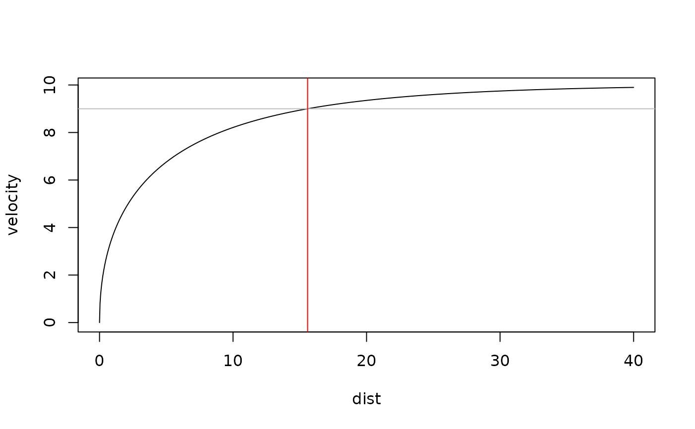
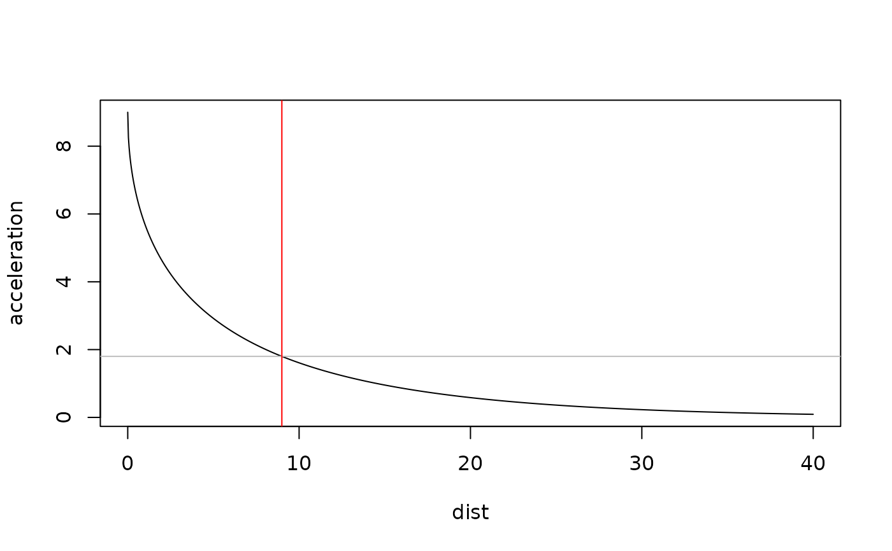

Family of functions that serve a purpose of finding maximal value and critical distances and times at which power, acceleration or velocity drops below certain threshold.
find_peak_power_distance finds peak power and distance at
which peak power occurs
find_peak_power_time finds peak power and time at which
peak power occurs
find_velocity_critical_distance finds critical distance at which percent
of MSS is achieved
find_velocity_critical_time finds critical time at which percent of MSS
is achieved
find_acceleration_critical_distance finds critical distance at which percent
of MAC is reached
find_acceleration_critical_time finds critical time at which percent of
MAC is reached
find_power_critical_distance finds critical distances at which peak power over
percent is achieved
find_power_critical_time finds critical times at which peak power over
percent is achieved
Usage
find_peak_power_distance(MSS, MAC, inertia = 0, resistance = 0, ...)
find_peak_power_time(MSS, MAC, inertia = 0, resistance = 0, ...)
find_velocity_critical_distance(MSS, MAC, percent = 0.9)
find_velocity_critical_time(MSS, MAC, percent = 0.9)
find_acceleration_critical_distance(MSS, MAC, percent = 0.9)
find_acceleration_critical_time(MSS, MAC, percent = 0.9)
find_power_critical_distance(
MSS,
MAC,
inertia = 0,
resistance = 0,
percent = 0.9,
...
)
find_power_critical_time(
MSS,
MAC,
inertia = 0,
resistance = 0,
percent = 0.9,
...
)Arguments
- MSS, MAC
Numeric vectors. Model parameters
- inertia
External inertia in kg (for example a weight vest, or a sled). Not included in the air resistance calculation
- resistance
External horizontal resistance in Newtons (for example tether device or a sled friction resistance)
- ...
Arguments passed on to
get_air_resistancevelocityInstantaneous running velocity in meters per second (m/s)
bodymassIn kilograms (kg). Default is 75kg
bodyheightIn meters (m). Default is 1.75m
barometric_pressureIn Torrs. Default is 760Torrs
air_temperatureIn Celzius (C). Default is 25C
wind_velocityIn meters per second (m/s). Use negative number as head wind, and positive number as back wind. Default is 0m/s (no wind)
- percent
Numeric vector. Used to calculate critical distance. Default is 0.9
Value
find_peak_power_distance returns list with two elements: peak_power
and distance at which peak power occurs
find_peak_power_time returns list with two elements: peak_power and
time at which peak power occurs
References
Haugen TA, Tønnessen E, Seiler SK. 2012. The Difference Is in the Start: Impact of Timing and Start Procedure on Sprint Running Performance: Journal of Strength and Conditioning Research 26:473–479. DOI: 10.1519/JSC.0b013e318226030b.
Samozino P. 2018. A Simple Method for Measuring Force, Velocity and Power Capabilities and Mechanical Effectiveness During Sprint Running. In: Morin J-B, Samozino P eds. Biomechanics of Training and Testing. Cham: Springer International Publishing, 237–267. DOI: 10.1007/978-3-319-05633-3_11.
Examples
dist <- seq(0, 40, length.out = 1000)
velocity <- predict_velocity_at_distance(
distance = dist,
MSS = 10,
MAC = 9
)
acceleration <- predict_acceleration_at_distance(
distance = dist,
MSS = 10,
MAC = 9
)
# Use ... to forward parameters to the shorts::get_air_resistance
pwr <- predict_power_at_distance(
distance = dist,
MSS = 10,
MAC = 9
# bodyweight = 100,
# bodyheight = 1.9,
# barometric_pressure = 760,
# air_temperature = 25,
# wind_velocity = 0
)
# Find critical distance when 90% of MSS is reached
plot(x = dist, y = velocity, type = "l")
abline(h = 10 * 0.9, col = "gray")
abline(v = find_velocity_critical_distance(MSS = 10, MAC = 9), col = "red")

# Find critical distance when 20% of MAC is reached
plot(x = dist, y = acceleration, type = "l")
abline(h = 9 * 0.2, col = "gray")
abline(v = find_acceleration_critical_distance(MSS = 10, MAC = 9, percent = 0.2), col = "red")

# Find peak power and location of peak power
plot(x = dist, y = pwr, type = "l")
peak_pwr <- find_peak_power_distance(
MSS = 10,
MAC = 9
# Use ... to forward parameters to the shorts::get_air_resistance
)
abline(h = peak_pwr$peak_power, col = "gray")
abline(v = peak_pwr$distance, col = "red")
# Find distance in which relative power stays over 75% of PMAX'
plot(x = dist, y = pwr, type = "l")
abline(h = peak_pwr$peak_power * 0.75, col = "gray")
pwr_zone <- find_power_critical_distance(MSS = 10, MAC = 9, percent = 0.75)
abline(v = pwr_zone$lower, col = "blue")
abline(v = pwr_zone$upper, col = "blue")